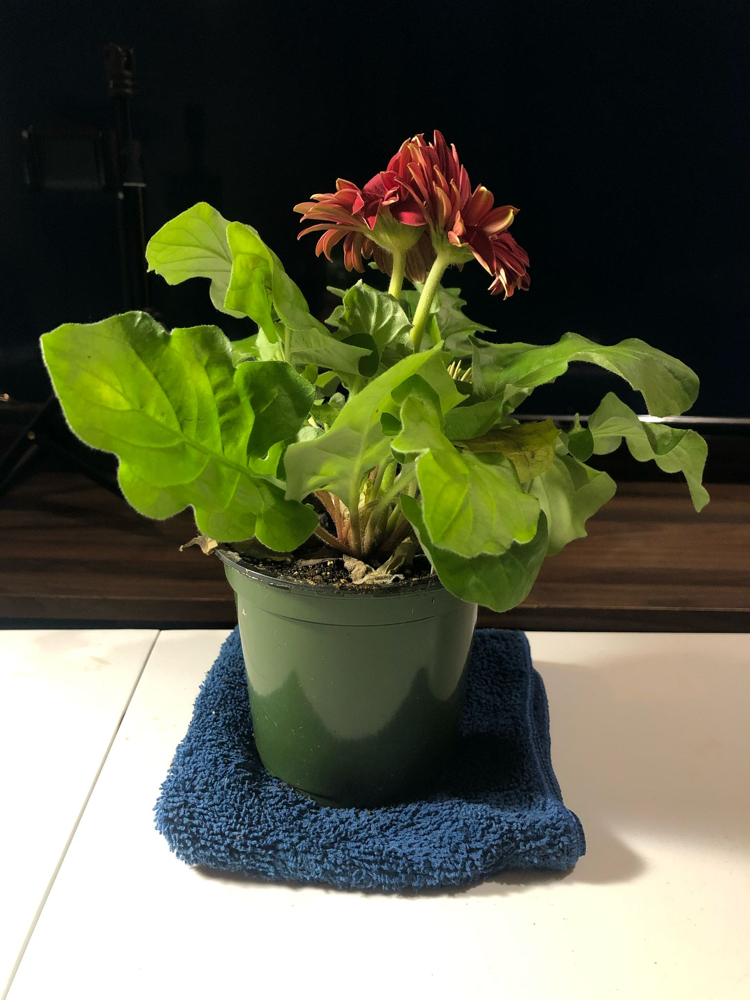
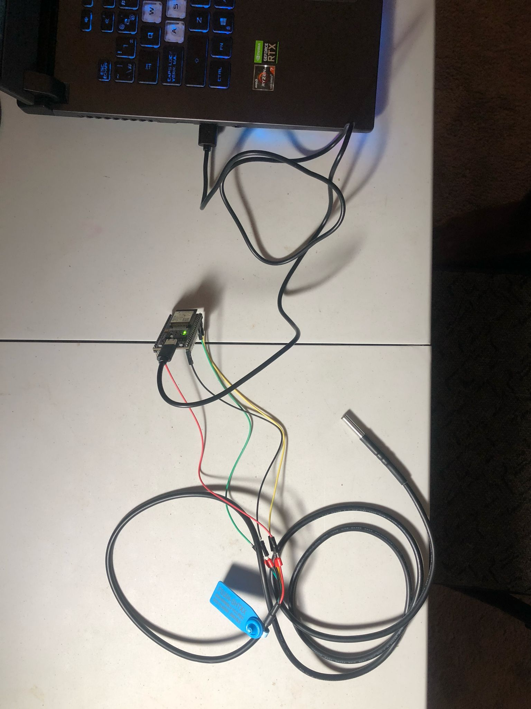
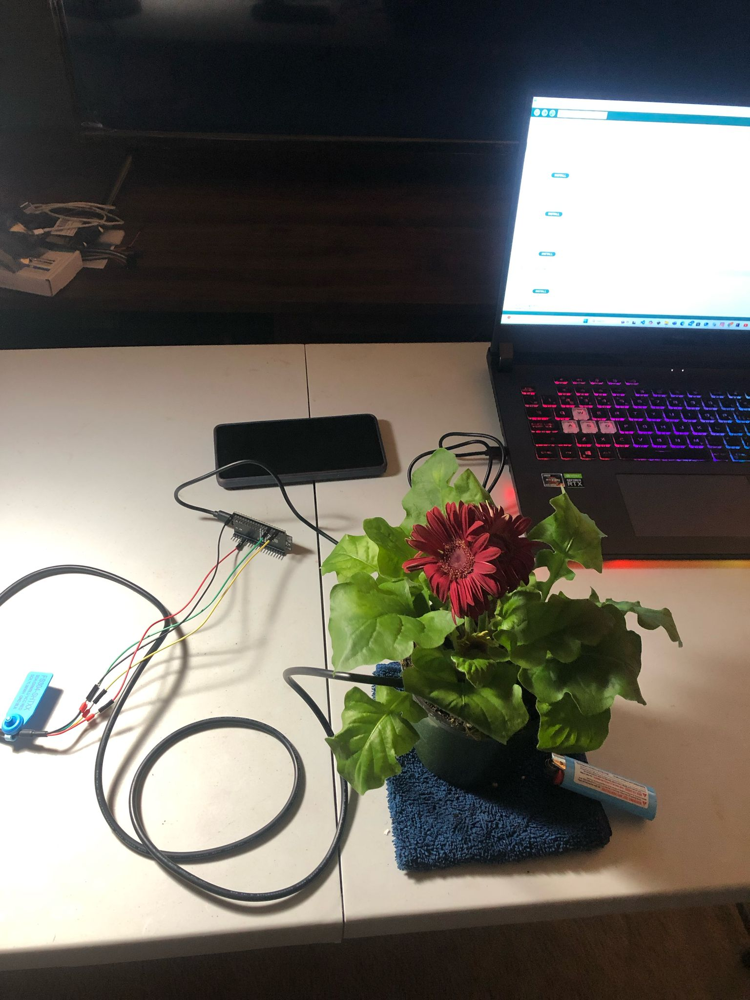
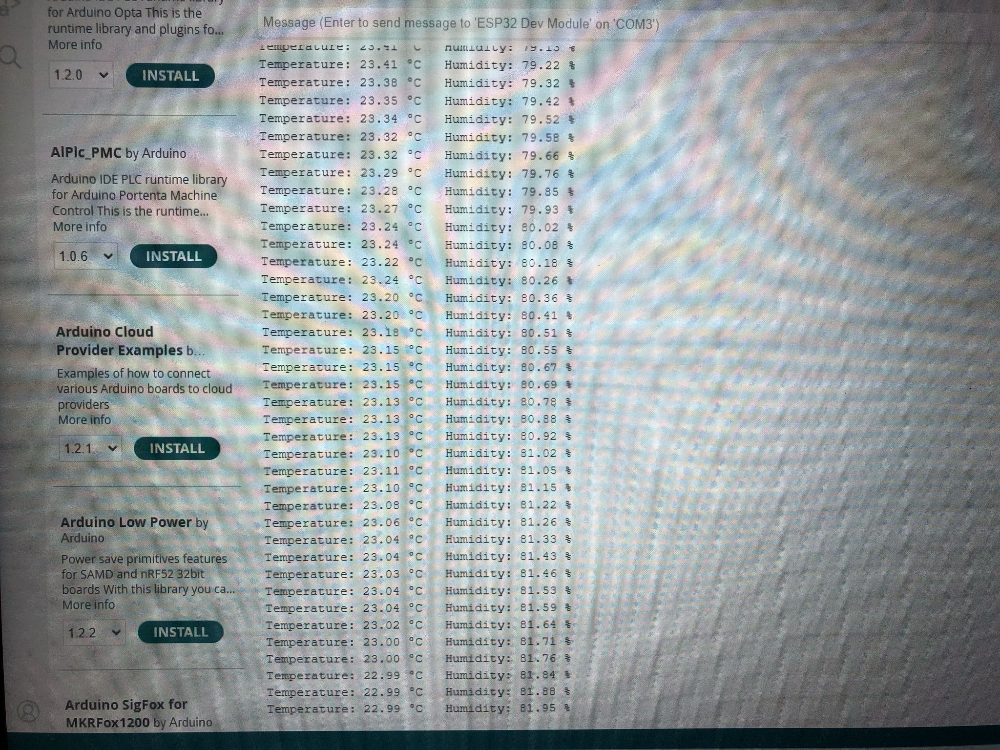

Gerbera Daisie Project
This project involves an ESP32 microcontroller connected to an SHT31 sensor (for measuring temperature and humidity). The ESP32 connects to a Wi-Fi network and serves a webpage that displays the current temperature and humidity values retrieved from the sensor. The project uses the ESPAsyncWebServer library to host the webpage.



